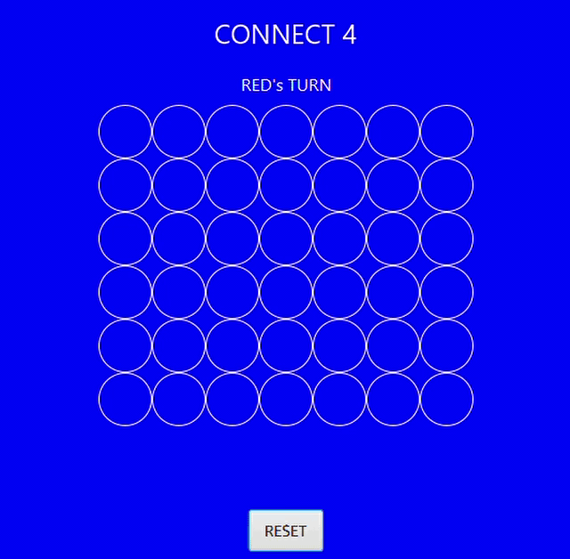

Connect 4 (GUI & Web-Service)
Game Objective:
Connect 4 is a two-player vertical board game where players take turns placing pieces on the board. The first player to connect four pieces (vertically, horizontally or diagonally) is the winner.
Summary:
All 69 possible winning combinations are stored in a text file. Each turn, the client GUI makes a request to the server. (For demo purposes, the request can be seen at the bottom of the GUI)
This request sends the current status of the game board and asks if a winning combination has been found and which player has won the game.
GitHub Repository